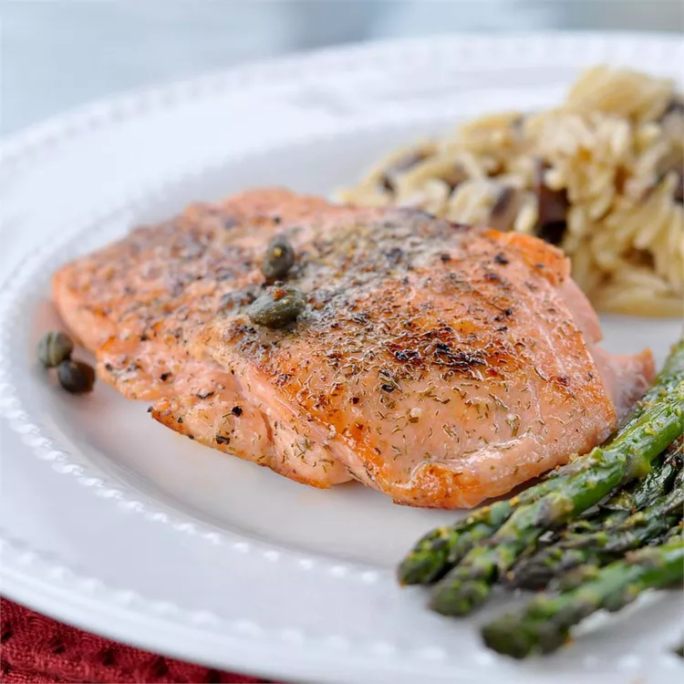

Pan-Seared Salmon

Learn how long to cook salmon on the stove with this easy pan-seared salmon recipe. The salmon fillets are simply seasoned with salt, pepper, and capers. Garnish with slices of lemon.
Simply seasoned with salt and pepper, these salmon fillets are pan seared with capers and garnished with slices of lemon. Capers give this dish a salty crunch, and lemon gives it flair and zest.
Ingredients
- 4 (6 ounce) fillets salmon
- 2 tablespoons olive oil
- 2 tablespoons capers
- ⅛ teaspoon salt
- ⅛ teaspoon ground black pepper
- 4 slices lemon
Directions
- Preheat a large heavy skillet over medium heat for 3 minutes.
- Coat salmon fillets with olive oil; place skin-side down in the preheated skillet and increase heat to high. Sprinkle with capers, salt, and pepper; cook for 3 minutes on one side. Turn salmon fillets over; continue to cook until salmon flakes easily with a fork, about 5 minutes.
- Transfer salmon to individual plates and garnish with lemon slices.